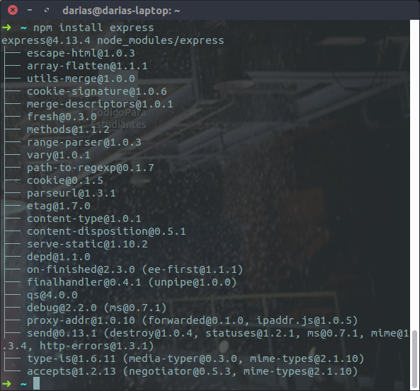
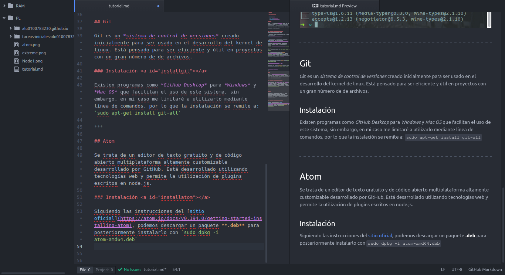

NodeJs es un un intérprete Javascript pensado para ser usado en el servidor y no en la máquina cliente. Está diseñado para con el objetivo de emplearse en entornos ligeros que requieran una respuesta a tiempo real así como aplicaciones de red escalables.
Podemos instalarlo de diversas formas:
Mediante los binarios ya compilados (así como el código fuente) disponibles aquí
Mediante el gestor de paquetes de tus distribución o sistema operativo según los especificado aquí
En mi caso, para Ubuntu, he optado por la segunda opción, y basta con agregar en la terminal el PPA mediante
curl -sL https://deb.nodesource.com/setup_4.x | sudo -E bash - para a continuación instalar con sudo apt-get install -y nodejs
Una vez instalado, podemos acceder al REPL (Read-Eval-Print-Loop) introduciendo en la terminal nodejs (en vez de simplemente node como sucede en otras distribuciones y sistemas operativos. Esto se debe a un conflicto de paquetes propio de Ubuntu)
Para instalar el gestor de paquete npm usaremos sudo apt-get install npm.
Finalemente, para instalar extreme y añadirlo a lista de dependencias ejecutamos npm install express --save
 ***
Git es un sistema de control de versiones creado inicialmente para ser usado en el desarrollo del kernel de linux. Está pensado para ser eficiente y útil en proyectos con un gran número de de archivos.
Existen programas como GitHub Desktop para Windows y Mac OS que facilitan el uso de este sistema, sin embargo, en mi caso me limitaré a utilizarlo mediante línea de comandos, por lo que la instalación se remite a: sudo apt-get install git-all
Se trata de un editor de texto gratuito y de código abierto multiplataforma altamente customizable desarrollado por GitHub. Está desarrollado utilizando tecnologías web y permite la utilización de plugins escritos en node.js.
Siguiendo las instrucciones del sitio oficial, podemos descargar un paquete .deb para posteriormente instalarlo con sudo dpkg -i atom-amd64.deb
 ***
Es un conversor gratuito y de código abierto de lenguajes de marcas empleado normalmente para la conversión de documentación.
Para mi distribución emplearé el .deb alojado en el siguiente enlace según lo especificado en la página de descargas. Al igual que en el caso anterior, para instalarlo debemos usar el comando sudo dpkg -i
Para emplearlo se utiliza la sintaxis:
pandoc input -f input.format -t output.format -o outputMarkdown es un lenguaje de marcas ligero ampliamente utilizado por su sencilla sintaxis y capacidad de er convertido luego a otros formatos de sintaxis más compleja como html.
Para editarlo y visualizarlo, podemos utilizar mismamente atom, que por defecto es capaz de renderizarlo mediante Ctrl + Shift + M y de exportarlo como html.